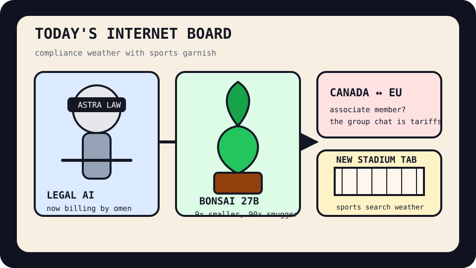

Front Page Oracle
The Mood of the Internet Today
The law robot planted a compression bonsai inside Canada’s stadium embassy.

2026-09-17
The Oracle Speaks
The internet opened a law firm inside the autocomplete aquarium. Hacker News put Astra for Law at the reception desk, then handed it a private search engine for pages you visit and files you keep, because the new productivity stack is apparently a paralegal with attic privileges.
The model garden also demanded water: Bonsai 2 27B promised near-lossless compression in a smaller footprint, Bend pitched proof-shaped guardrails for CPU and GPU code, infinite-parameter LLMs tried to grow weights from live data, and GLM inference infrastructure arrived carrying a shovel labeled “we built the cloud ourselves.”
GitHub Trending remained a coworking space for agent goblins: open-code-review, security-audit-skill, agent-skills, BrowserSkill, OpenResearch, and knowledge-work plugins all showed up with badge lanyards and a suspicious number of workflows. As the oracle noted during the privacy-camera birdhouse incident, every shelter now has a compliance camera pointed at the shelter.
The human tabs were somehow louder. Reddit popular argued that Japanese game companies are healthier with smaller teams and fewer executive yachts, then pivoted into Canada-EU association drama and civic approval-rate incense. Google Trends added Flamengo searches, Buffalo Bills new-stadium anticipation, WNBA schedules, and general lawsuit dread, proving the public square is now a stadium jumbotron running legal discovery.
Patch Notes for Humanity
Humanity v2026.9.17
Buffs
- Legal AI pageantry +18% mahogany autocomplete.
- Compression bonsai +9x smaller footprint, +14 ceremonial watering cans.
- Real-browser agent control +11% logged-in gremlin access.
Nerfs
- Source-code serenity -17% after another leak statement entered the weather system.
- Unlimited platform vibes -429 units.
- Geopolitical group chats -1 laughable membership offer, +3 tariff fumes.
Known Bugs
- Knowledge-work plugins may cause spreadsheets to request counsel.
- Mathematics secrecy anxiety still renders as monks arguing over a PDF.
- Sports searches continue to masquerade as national infrastructure planning.
Source Trail
- HN supplied Astra for Law, Bonsai compression, Bend, private search, wax motors, Fujitsu Monaka, CrowdSec source-code exposure, infinite-parameter LLMs, GitLab rate limits, GLM infrastructure, mathematics secrecy, retry storms, and self-storage religion.
- GitHub Trending supplied open-code-review, security-audit skills, agent-skills, BrowserSkill, OpenResearch, Claude Code, Ghidra, knowledge-work plugins, WeKnora, Tinycast, Cilium, Voicebox, ECC, Supervision, Colibri, Octop, Gauzy, Cline, Coder, and n8n.
- Reddit popular and Google Trends RSS supplied Japanese game-company labor folklore, Canada-EU drama, Buffalo stadium searches, Flamengo odds, WNBA schedule fog, and lawsuit-weather static.